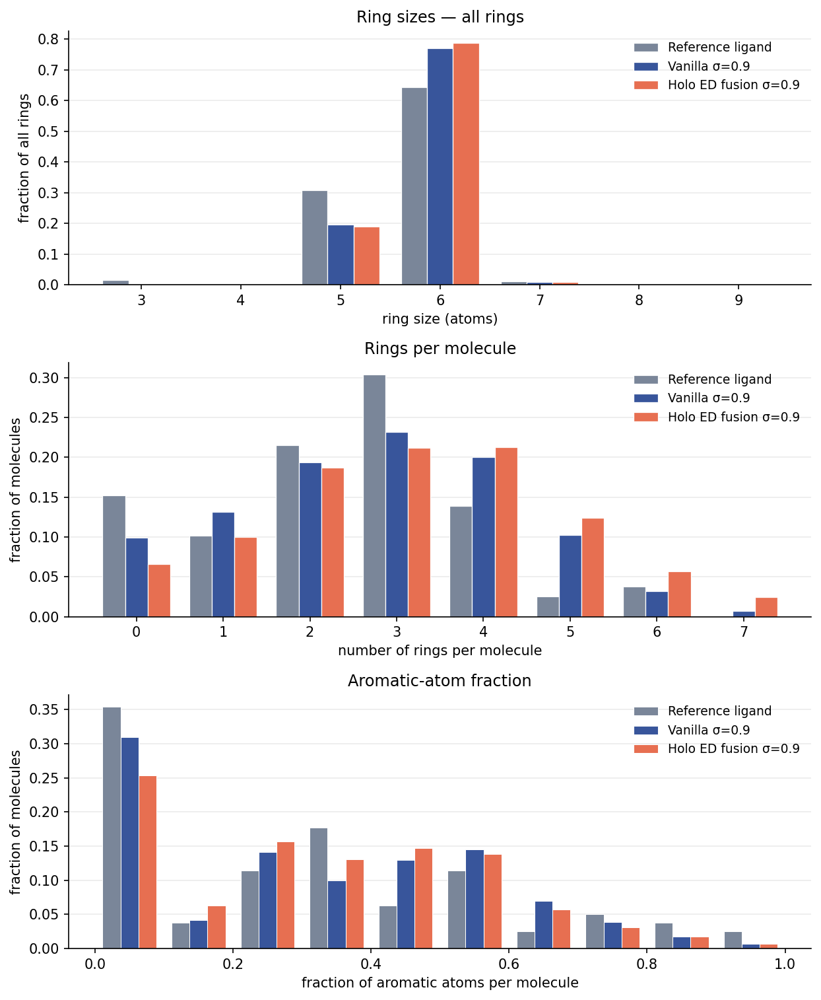
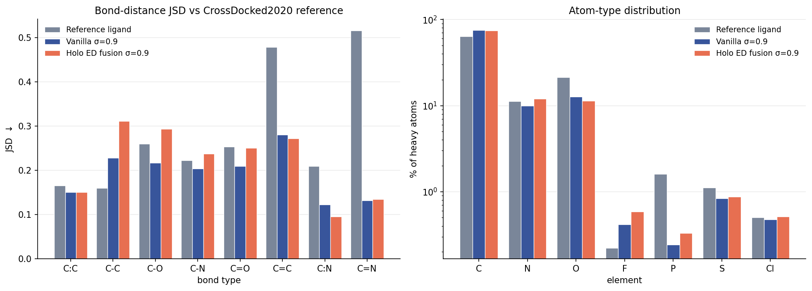

Molecular distributions — rings, aromaticity, bonds, atom types
The VoxBind paper's Figure 10 (ring sizes, rings per molecule, aromatic-atom fraction) and
Figure 11(a) (Jensen-Shannon divergence of bond distances), plus the atom-type distribution,
computed for vanilla VoxBind and the density-conditioned fusion model. Where the pose-quality
measures ask is this molecule placed well, these ask does this model draw the right
kind of molecule at all.
1Bottom line
Vanilla reproduces reference bond geometry better; the fusion model builds bigger,
more heavily ringed molecules. Mean bond-distance JSD is 0.193 for vanilla against
0.218 for fusion, driven almost entirely by single bonds (C–C 0.228 → 0.312, C–O 0.217 → 0.293).
Fusion averages 3.24 rings per molecule against vanilla's 2.78 and the reference's 2.56.
Atom-type composition is a tie.
Measure
Reference ligand
Vanilla σ=0.9
Holo ED fusion σ=0.9
Mean bond-distance JSD ↓
0.283*
0.193
0.218
Atom-type JSD ↓
0.062
0.077
0.076
Mean rings per molecule
2.56
2.78
3.24
Mean aromatic-atom fraction
0.295
0.309
0.316
Molecules / bonds
79 / 1,919
7,888 / 203,273
7,873 / 213,820
* The crystal reference ligands' own JSD is not a quality floor — see the caveat
in section 3. All JSD values are computed against the CrossDocked2020 empirical distributions that
TargetDiff ships, which is the reference every baseline in the paper is scored against.
2Figure 10 — rings and aromaticity

Top ring sizes over all rings · middle rings per molecule ·
bottom fraction of aromatic atoms per molecule.
What the panels say
Ring sizes are near-perfect for both models. Only 5- and 6-membered rings appear
in any quantity, exactly as in the reference — no 3-, 4- or 8-membered strain traps. Both models
over-produce 6-rings relative to crystal ligands (0.77 / 0.78 against 0.64) and correspondingly
under-produce 5-rings (0.19 / 0.19 against 0.31). That skew toward benzene is shared, not a
fusion artifact.
Ring count is where the two models separate. The reference peaks at 3 rings and
15% of its ligands have none at all. Vanilla shifts right (mean 2.78); fusion shifts further
(mean 3.24), with visibly more mass at 4, 5, 6 and 7 rings and only 6.5% ring-free molecules.
Conditioning on receptor density appears to push the model toward filling the pocket with fused
ring systems.
Aromatic fraction follows the same pattern, mildly. Both models under-produce
the reference's large ring-free/low-aromatic population and over-produce the 0.2–0.5 band.
The means differ by only 0.007 between models — far less than the ring-count gap, meaning the
extra fusion rings are disproportionately non-aromatic.
3Figure 11(a) — bond-distance JSD and atom types

Left JSD between each model's bond-distance distribution and the CrossDocked2020
reference, per bond type (lower is better). Right heavy-atom composition, log scale.
Bond type
Reference ligand*
Vanilla σ=0.9
Holo ED fusion σ=0.9
C:C (aromatic)
0.165
0.151
0.151
C–C
0.160
0.228
0.312
C–O
0.259
0.217
0.293
C–N
0.222
0.204
0.237
C=O
0.253
0.209
0.251
C=C
0.478
0.281
0.272
C:N (aromatic)
0.210
0.123
0.095
C=N
0.516
0.132
0.134
Mean
0.283*
0.193
0.218
* Do not read the reference column as a target. The 79 crystal ligands contribute
only 1,919 bonds against the models' 200k+, so their empirical histograms are sparse and noisy, and
JSD against a smooth reference is inflated by that alone. It shows up plainly in the rare bond
types: C=N scores 0.516 for the crystal ligands and 0.13 for both models, which is a sample-size
artifact and not a statement about crystal geometry. The column is included only to show what
small-sample noise looks like on this scale.
Reading the bond types
The gap is a single-bond gap. Fusion is worse on C–C (+0.084), C–O (+0.076),
C–N (+0.033) and C=O (+0.042), while the two are tied on aromatic C:C and C=N, and fusion is
actually better on aromatic C:N (0.095 vs 0.123). Aromatic bonds are geometrically
constrained by the ring, so a model can get them right almost for free; freely rotating single
bonds are where a generator has to place atoms accurately, and that is where fusion slips.
This corroborates the rigid-fragment result rather than contradicting it.
Rigid fragments contain almost no rotatable single bonds by construction — that is what makes
them rigid — so a metric restricted to them was always going to miss a single-bond deficit.
Read together, the two say local geometry inside rigid units is fine while the bonds
between them are less accurate for fusion.
Atom types are a tie (JSD 0.077 vs 0.076). Both models under-produce oxygen
badly relative to crystal ligands (12.7% / 11.3% against 21.4%) and over-produce carbon
(75.3% / 74.4% against 64.0%). Phosphorus is the standout: crystal ligands are 1.61% P while
the models manage 0.24% and 0.33%. Since P-containing molecules are also what MMFF most often
fails to parameterise in these sets, phosphorus is plainly the element both models handle worst.
Bond-length binning, the eight reference bond types and the CrossDocked2020 empirical
distributions all come from TargetDiff's utils.evaluation.eval_bond_length_config,
so the JSD column sits on the same scale as the paper's baselines rather than a private one.
Note on naming: scipy's jensenshannon returns the JS distance (the square
root of the divergence). TargetDiff's evaluator uses it as-is and the published baselines inherit
that convention, so it is kept here — the numbers are comparable to the paper's whatever the label
says. Inputs — vanilla: exps/_vanilla_ep923/samples/full_eval_ep923/_dock79 ·
fusion: exps/voxbind_frozenenc_atomblob7_v2p1_sig0.9/samples/full_eval_ep350.